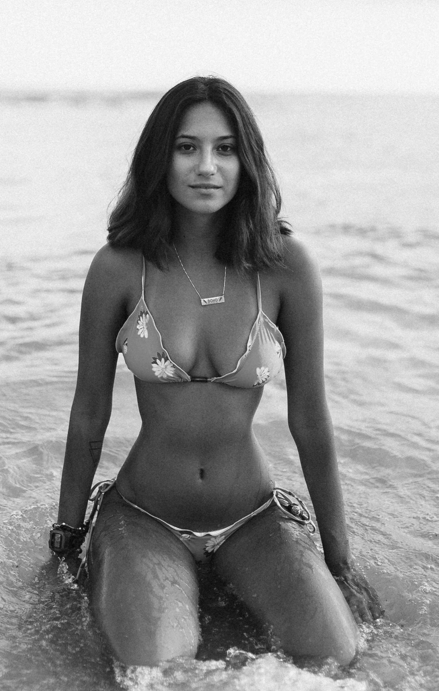

This procedure aims to give you the plump hourglass figure that the hottest celebrities have. This procedure will give you what you need to propel you further in todays world. Our surgeons utilize rib cage reconstruction in order to make your torso smaller. Rib cage reconstruction includes both the extraction of the bottom 8 ribs as well as the reconstruction of the remaining ribs in order to create a smaller torso. The next part of the surgery includes hip widening which utilizes the cartilage and bone tissue from the rib reconstruction to widen the hips. The last part of the surgery includes fat transfer in order to make the waist as skinny as possible while plumping the hips, butt, thighs, and breasts. Recovery is very long as this procedure is severely intense to the body. PHOENIX Plastic Surgery is known for its ability to accomodate middle and high schools with recovery plans so that your academics are not compromised. This surgery allows you to achieve that perfect Kardashian shape - a round butt, bigger thighs, small waist, and a large bust. The Stormi K is perfect for girls who really want to push themselves to do well and be successful in life.
The Social Influencer

This surgery is much more skinny intensive for the girls who want a thinner look. This look also allows you to maintain a successful place in todays society but is more fitting for a social influencer or model. The main process of this procedure is hip shaving where the tops and sides of the hip, or pelvic bone, are shaven in order for the body to become smaller. The hips can be shaven anywhere from a few centimeters to an inch or two. The procedure also includes rib cage manipulation where the widest bones of the rib cage are removed in order for the minimum waistline to be achieved. This can also include between 2 to 8 ribs depending on the patient. We always cater our procedures to your individual body types. The last part of the procedure includes intensive liposuction to ensure that your body is the skinniest that it can look, while also maintaining plumpness in the butt and thighs.The recovery process includes rib and hip compression as well as extensive rest. Again, our company is incredible at allowing you to maintain your everyday life in middle or high school while also achieving the look that you desire. We allow for you to conform to our standards as quickly in life and with as much ease as humanly possible. Again, this look is also extremely successful for people who want to maintain a positive and influential place in society today.